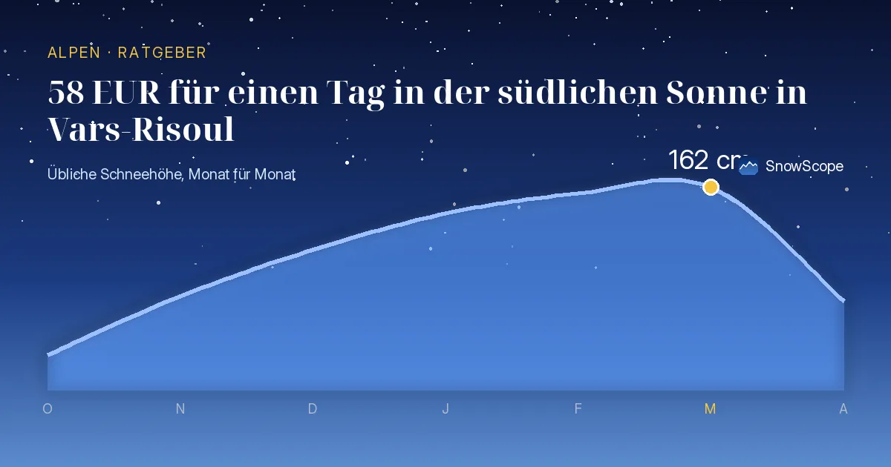

58 EUR für einen Tag in der südlichen Sonne in Vars-Risoul
Du kannst diesen Winter für 58 EUR pro Tag oder 298 EUR für einen 6-Tage-Pass im Gebiet der Forêt Blanche skifahren. Dieser südfranzösische Skiort bietet 131 km markierte Pisten auf 1.090 m Höhenunterschied. Bevor du buchst, musst du wissen, ob der frühe Schnee dein hart verdientes Geld wert ist.
Die Live-Schneeprognose für Vars-Risoul in der SnowScope-AppSchneehöhen, Pulverschnee-Alarme und 3D-Karte, gratis.
Die Kosten für einen Trip in die Forêt Blanche
Wenn du so wie ich auf jeden Euro achtest, ist der Preis für den Skipass das Erste, worauf du schaust. Für den Winter 2026-27 kostet ein 1-Tages-Pass für Erwachsene für das Gebiet Vars-Risoul 58 EUR. Wenn du länger bleiben willst, kostet der 6-Tage-Pass für Erwachsene 298 EUR. Damit hast du Zugang zu einem markierten Skigebiet mit 38 Liften und 131 km Pisten.
Der Skiort liegt zwischen 1.632 m und 2.722 m. Diese Höhe ist wichtig, weil der frühe Schnee ein Glücksspiel sein kann. Du bezahlst für ein großes Gebiet, also willst du sichergehen, dass die Pisten auch wirklich offen sind. In unserer Schneehistorie aus 46 vergangenen Wintern liegt die übliche Schneehöhe im Dezember am Fuß der Lifte bei 33 cm, was für den Saisonstart nicht sehr viel ist.

Ist der Schnee im Dezember gut genug?
Wenn man sich unsere Schneehistorie von 1980-81 bis 2025-26 ansieht, variiert die Schneehöhe stark. Auf halber Höhe, also auf 2.177 m, liegt die übliche Dezember-Höhe bei 51 cm. In einem schneearmen Dezember, was etwa in 1 von 10 Wintern vorkommt, kann diese Höhe jedoch auf nur 20 cm sinken. Am Gipfel der Lifte auf 2.722 m sieht die Lage mit einer üblichen Höhe von 77 cm besser aus.
Die Basis auf 1.632 m ist die schwächste Stelle. In einem schneearmen Dezember kann die Höhe dort nur 9 cm betragen. Wenn du Glück hast und einen schneereichen Dezember erwischst, was ebenfalls in etwa 1 von 10 Wintern passiert, könntest du 61 cm an der Basis und 160 cm am Gipfel sehen. Letzten Winter, im Dezember 2025-26, lag der Durchschnitt bei 25 cm an der Basis und 57 cm am Gipfel, was etwas unter den üblichen Werten lag.
Chancen für Anfang oder Ende Dezember
Der Zeitpunkt deiner Reise im Dezember beeinflusst deine Chancen auf guten Schnee. In der ersten Woche des Monats, vom 1. bis 7. Dezember, gibt es nur in 30 % der Winter 30 cm oder mehr an der Basis. Bis zur letzten Woche, vom 22. bis 28. Dezember, steigt dieser Anteil auf 74 %. Wenn du 50 cm oder mehr an der Basis sehen willst, passiert das selbst in der letzten Woche nur in 30 % der vergangenen Winter.
Die mittlere Höhe ist eine sicherere Wette für dein Geld. Vom 15. bis 21. Dezember gibt es in 85 % der Winter mindestens 30 cm Schnee auf 2.177 m. Der Gipfel der Lifte ist am zuverlässigsten, mit 91 % der Winter, die bereits vom 8. bis 14. Dezember 30 cm oder mehr haben. Bis Ende des Monats hat der Gipfel in 93 % der vergangenen Winter 50 cm oder mehr.
Vergleich mit Serre Chevalier
Es lohnt sich, einen Blick auf den größeren Nachbarn, Serre Chevalier, zu werfen. Dieser Skiort hat ein größeres markiertes Skigebiet mit 157 km Pisten und 70 Liften. Für einen Trip von der Eröffnung bis zum 18. Dezember 2026 kostet ein 6-Tage-Pass für Erwachsene dort 276,00 EUR. Das ist günstiger als der Pass für 298 EUR in Vars-Risoul für diese spezifischen Daten. Vom 19. Dezember 2026 bis zum 1. Januar 2027 steigt der Preis für den 6-Tage-Pass in Serre Chevalier jedoch auf 345,00 EUR.
Serre Chevalier hat auch mehr Schnee am Gipfel. Der höchste Lift liegt auf 2.765 m, wo die übliche Dezember-Höhe bei 111 cm liegt. In unserer Schneehistorie hat Serre Chevalier ab dem 8. Dezember in 100 % der vergangenen Winter 30 cm oder mehr am Gipfel. An der Basis, die mit 1.219 m tiefer liegt, beträgt die übliche Höhe 30 cm, was den 33 cm an der Basis von Vars-Risoul ähnelt.
Aktuelle Trends und Ausblick
Unsere Schneehistorie zeigt, dass der Dezember-Schnee auf halber Höhe im Laufe der Zeit tatsächlich besser geworden ist. In der Mitte der ersten 15 Winter (1980-81 bis 1994-95) lag der Dezember-Durchschnitt bei 42 cm. In der Mitte der letzten 15 Winter (2011-12 bis 2025-26) stieg dieser Durchschnitt auf 62 cm. Das sind gute Nachrichten für Skifahrer, die sich Sorgen um die südliche Sonne machen.
Zum 13. November 2026 ist der Schnee recht dünn, mit 0 cm an der Basis und 10 cm am Gipfel. Der Zwei-Wochen-Ausblick für die mittlere Höhe und darüber zeigt jedoch eine Vorhersage von 62 bis 86 cm Neuschnee. Das könnte einen großartigen Saisonstart bedeuten, falls die Vorhersage hält. Der übliche erste Tag mit dauerhaftem Schnee am Gipfel ist der 10.-19., der Berg ist also bereits hinter diesem Datum.
Tipps für Skifahrer
- Buche deinen Trip für die Woche vom 22. bis 28. Dezember, wenn du eine 74 % Chance auf 30 cm Schnee an der Basis haben willst.
- Bleib auf den Pisten oberhalb der mittleren Höhe von 2.177 m, wo die übliche Höhe bei 51 cm liegt, anstatt 33 cm am Fuß des Berges.
- Vergleiche den 298 EUR Pass mit dem 276,00 EUR Frühsaison-Preis in Serre Chevalier, wenn du vor dem 18. Dezember reist.
- Prüfe den Lawinenlagebericht, bevor du abseits der Pisten fährst, besonders wenn die vorhergesagten 62 bis 86 cm Neuschnee kommen.
- Kaufe deinen Forêt Blanche Pass auf der offiziellen Website, um sicherzugehen, dass du den geprüften Preis von 58 EUR für einen Tag bekommst.
Weitere Karten (externe Seiten)
Quellen und Nachweise
- Risoul, official ski pass page, Forêt Blanche 2026-27 risoul.labellemontagne.com/fr/hiver/forfaits/risoul-foret-blanche/
- Risoul, official 6-day Forêt Blanche pass page 2026-27 risoul.labellemontagne.com/fr/hiver/forfaits/6-jours-foret-blanche/
- Serre Chevalier, official booking site, ski passes 2026-27 reservation.serre-chevalier.com/achetez-vos-ski-pass-serre-chevalier-et-autres-prestations.html
- SnowScope, December snow at three heights and today's snow map snowscope.app/
Zu diesen Zahlen
Schneewerte: SnowScope-Schneehistorie, 46 vergangene Winter (1980-81 bis 2025-26) auf drei Höhen jedes Skigebiets (ein höhenkorrigiertes Modell der Vergangenheit: eine Schätzung für eine Fläche, keine Messungen des Skigebiets); Dezemberwerte aus den täglichen Schneehöhen dieser Winter. Aktueller Schnee und Zwei-Wochen-Ausblick: SnowScope-Prognosen (Ausblick aus ECMWF und GFS, eine Spanne, kein Versprechen). Lifte und Pisten: OpenSkiMap-Kartierung. Preise: die offiziellen Seiten unten, gelesen am 2026-11-13; Preise können sich ändern, vor der Buchung prüfen.
Offizielle Lawinenlageberichte: Météo-France – Bulletin d'estimation du risque d'avalanche
Diesen Bericht zitieren
Für Forschung, Lehre oder Presse: Zahlen und Grafiken sind unter CC BY 4.0 mit dieser Quellenangabe frei nutzbar.
SnowScope (2026), 58 EUR für einen Tag in der südlichen Sonne in Vars-Risoul, https://snowscope.app/blog/de/2026/11/vars-risoul-foret-blanche-december-ski-price-snow-2026.html, abgerufen am 2026-11-14
SnowScope (Atlas Labs). (2026, November 14). 58 EUR für einen Tag in der südlichen Sonne in Vars-Risoul. SnowScope snow reports. https://snowscope.app/blog/de/2026/11/vars-risoul-foret-blanche-december-ski-price-snow-2026.html
BibTeX
@misc{snowscope2026varsrisoulforetblanchede,
author = {{SnowScope (Atlas Labs)}},
title = {58 EUR für einen Tag in der südlichen Sonne in Vars-Risoul},
year = {2026},
month = nov,
howpublished = {\url{https://snowscope.app/blog/de/2026/11/vars-risoul-foret-blanche-december-ski-price-snow-2026.html}},
note = {Published 2026-11-14 17:01 UTC; accessed 2026-11-14}
}· CC BY 4.0 · Methoden, Daten und Werkzeuge →
Vars-Risoul: Schnee und Temperatur nach Höhe, dieser Winter vs letzter (Werkzeuge) →
Vars-Risoul folgen
Gratis: eine Nachricht, wenn Neuschnee kommt, und jeden Morgen die Vorhersage.